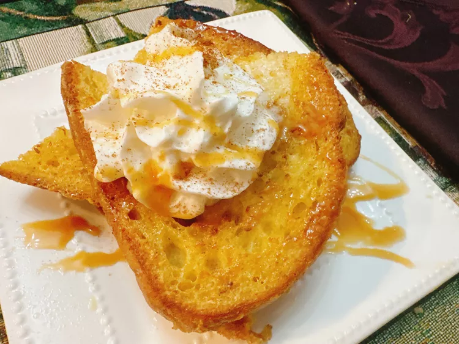

Back
Coffee Creamer French Toast

Description
This coffee creamer French toast is the classic breakfast recipe for French toast, but using cinnamon French toast flavor coffee creamer in place of milk brings just the perfect amount of sweet. Top with whipped cream, a drizzle of caramel sauce, and a sprinkle of cinnamon if you want to take it up a notch.
Ingredients
- 1/2 cup cinnamon French toast flavor coffee creamer
- 1 1/2 teaspoons brown sugar
- 1/4 teaspoon cinnamon
- 1 splash mexican vannila extract
- 1 pinch salt
- 4 slices italian bread
- 1 tablespoon butter
- whipped cream (optional)
- pinch ground cinnamon (optional)
- prepared caramel sauce (optional)
Directions
- Whisk egg, coffee creamer, brown sugar, cinnamon, vanilla, and salt together in a shallow dish until foamy and smooth. set aside.
- Melt butter in a large nonstick skillet over medium heat.
- Soak each slice of bread in egg mixture, 5 to 7 seconds per side. Place bread into the skillet, cook until golden brown on both sides, 3 to 4 minutes per side.
- Serve immediately. If desired, top with whipped cream, a dash of cinnamon, and caramel sauce.